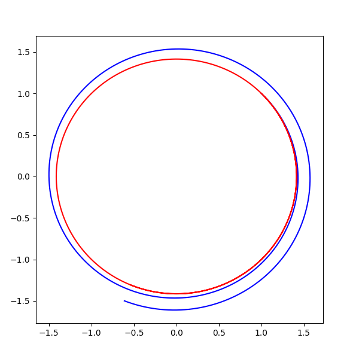
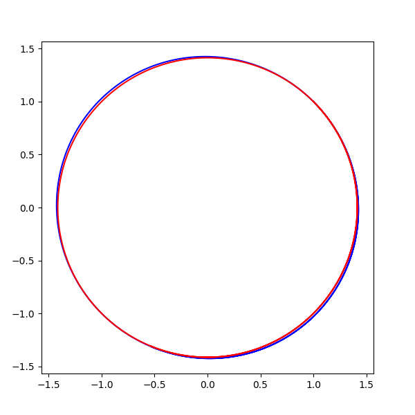
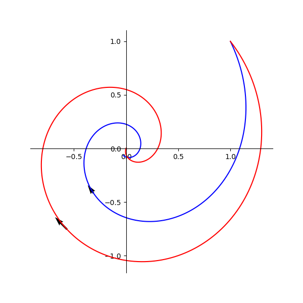
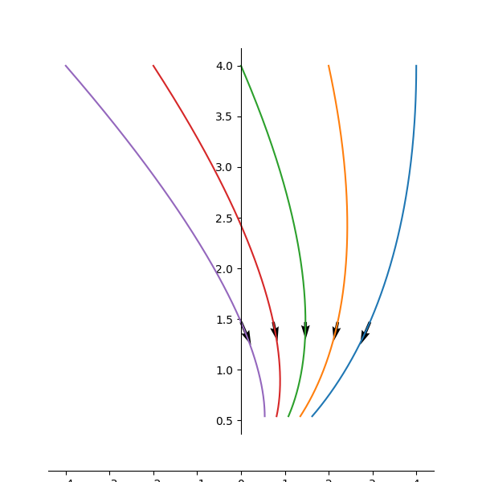

04平面动力系统
平面动力系统
本文主要记录平面动力系统的一些特点，并用程序来模拟其中运动效果。
参考书籍：
《微分方程，动力系统与混沌引论》
平面动力系统可以认为是微分方程系统在2维下的状况，所谓微分方程组系统可以表示为如下系统：
即每个参数的一阶导数，受所有n个参数和时间t影响，这个影响表现为函数。在二维情况下，如果讨论自治系统，即不与时间关联。我们可以得到如下公式
平面动力系统分类
现在只考虑简单情况，即都是的线性组合情况，这种情况下可以表示为
这算是一种线性动力系统 根据参考书籍，对于这类有明确分类，可以根据特征值决定运动效果而分为三类
这三类运动都有明显的特征
- 实特征向量：沿着实特征向量靠近或者远离
- 复特征向量：围绕中心旋转靠经或者远离
- 重特征向量：特征向量部分靠近远离，另外一个会是一个关联时间的变化特征向量。
这三个都可以解析出明确的解析解。但也可以通过数值分步骤模拟来计算。例如对于最简单的圆心转动动力系统，其结构如下：
可以解析出其运动解效果为
其实可以简单看出来，这就是一个圆周转动运动。就变成了角速度，时间控制转动角度。这个结论似乎非常平凡，但是可以注意到其可以被一组微分方程描述。因从对于问题的思考方式，不再是直接想到角度转动上的结构，而是从微分方程组上入手。
此外值得注意的是，上面的微分方程解析解其实被没有规定初始值，实际上这相当于我们给定一个微分运动的动力效果，求解该效果下的解析解方程，而这个解析方程效果，实际对于任意初始值，或者说在平面上的任意一点来说都成立。也就是该微分方程描述力平面上的一个运动场效果。对于初始位置选择的影响，被包含在了之中。
不过这两种思考方式都导出相同的运动效果，还是非常恰当和神奇的。另一方面是直接从转动入手可能会很难构造出解析解的方程，从微分方程组出发则具有引导性构造出解析解的结构。
下面是两种方式用计算机离散的模拟运动情况图
- 蓝色：Euler Method通过微分方程系统计算的解，因为每一步相当于沿着切线递增，可以看到圆在不断外廓。
- 红色：解析解给出的随时间变化效果。可以看到就是稳定的圆周运动化。
实际可以通过Semi Euler Method方式来数值求解微分系统效果。这是后可以看到圆会更加稳定一些。如下图，当然这部分属于数值分析的部分结构。
根据参考资料，如果微分运动方程形式为
则解析解为
当的时候，会是一个收敛的螺旋圆线。但是我们可注意到这个部分实际上就描述了圆的半径部分，其可以是一个任意单纯跟相关联的函数。可以部分改写改解析描述，来修正我们的运动效果。例如我们假定时刻目标归到原点，那么可以这样来修改:
这里面描述了向中心的收敛趋势。
- 蓝色为动力方程解，红色为线性半径修改解。
另一方方面我们关注重特征值的微分方程效果。看如下微分方程
其有解析解
其不同点的运动方程有如下图示效果
